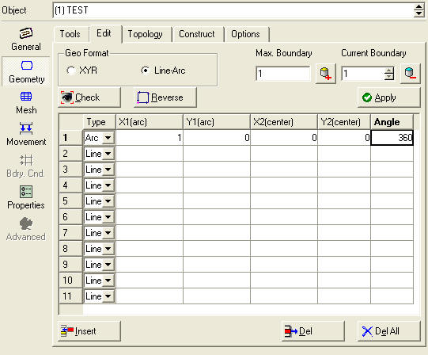
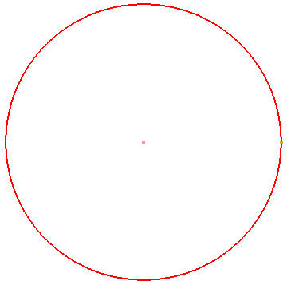
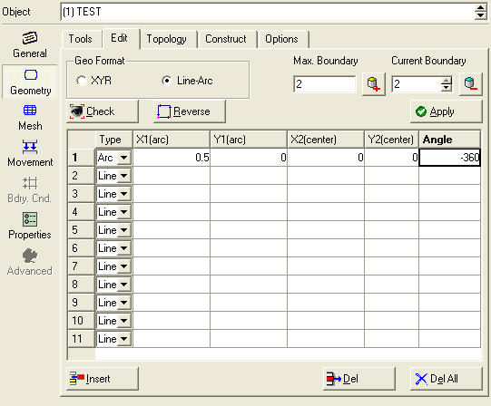
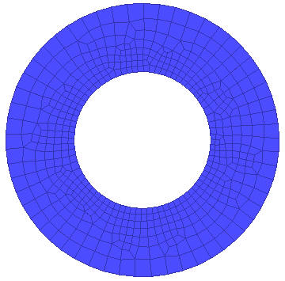

*From QT3 interface
This case involves the two features of generating a circular geometry and adding an internal hole. To create a circular geometry, go to the geometry window of the desired object.
Click the Edit tab and select the Line-Arc format radio button as seen in Fig. AIX.1.
Set the type to Arc.
The first point X1, Y1 is the start of the arc. The second point X2, Y2 is the center of the arc. The angle is the amount of sweep of the arc. Input the following values: (1,0) for X1, Y1; (0,0) for X2, Y2; and 360 for the angle.

Setting the geometry type to Line-Arc
This will yield the result seen in Fig. AIX.2.

Generating a circular geometry
Increment the boundary number in the geometry window and select the second boundary (See Fig. AIX.3.).

Incriminating the boundary number and selecting the second boundary
Set the geometry type to Arc and set the curve as follows (0.5,0) for the first point; (0,0) for the second point; and –360 as the angle.
At this point a mesh can be generated which will have a hole in the middle (See Fig. AIX.4.).
Note:
The exterior boundary was counter-clockwise while the interior boundary was clockwise.

A circular result with a hole
Related Topics: